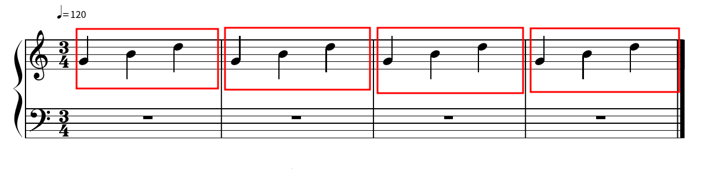

A música é uma forma de se expressar e se comunicar, como uma linguagem ou um idioma, então, nada mais justo do que termos uma forma de escrever o que estamos interpretando, e é assim que nasceu a notação musical. A notação é uma forma de representar a forma como a música pode ser tocada, facilitando a reprodução e entendimento da mesma.
Abaixo temos um exemplo comum de notação em branco:
A notação é baseada em quatro pontos principais, as Claves, o Compasso, o BPM e a Pauta.
A pauta (destacada abaixo) é o regimento onde as notas serão representadas, são um conjunto de 5 linhas paralelas e geralmente 4 linhas verticais dividindo o compasso que falaremos mais a frente.
O compasso é a representação do tempo da música, como se fosse uma divisão entre tempos, o mais comum é o 4/4 onde é dividido o tempo da música em 4 partes de 4 tempos, ou seja cada linha vertical é composta por 4 tempos dentro dela.
Mas como eu posso representar meu compasso? De uma forma simplificada, o primeiro número representa a divisão de um tempo, já o segundo representa quantas vezes este tempo será tocado, um compasso 3/4 será tocado 4 vezes e depois repetirá. Na notação esse exemplo ficaria assim:
Onde o compasso é 3/4:
A divisão de um tempo será em 3 partes:
E serão tocados 4 tempos:
As notas e escalas são a parte principal para a música, como se fossem as palavras da linguagem, como qualquer idioma, as palavras são inúmeras, mas compartilham semelhanças, para saber mais sobre notas e escalas clique aqui.
As claves representam a nota principal da pauta, para que saibamos onde nossas notas começam e terminam:
Na imagem acima temos duas claves, a clave de F e a clave de G. Abaixo podemos ver os tipos de claves mais utilizados.

Nós podemos saber qual a nota principal ao identificar qual linha a clave está sinalizando.
As notas sinalizadas acima, são G e F (Sol e Fá), podemos saber qual nota é sol observando onde a espiral se inicia na segunda linha de baixo para cima nesse caso, já na clave de F, sabemos que a nota Fá sempre vai estar entre os dois pontos da clave.
O BPM (abaixo), significa Batidas Por Minuto, ele dita a velocidade da música. Logo, quanto mais alto o BPM, mais rápido cada tempo será.